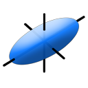
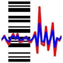

Links
Software
OrientEllipseFit
Antevs
PicTracker
Donate
Geology
American Geophysical UnionGeological Society of America
GSA Structure & Tectonics
Software
As a structural geologist, I spend my time studying and enjoying rock structures from microscopic crenulations to great rifts and mountain belts. I am, however, a compulsive computer programmer. The first geological software I wrote was a strain analysis program for Win Means, using punch cards and Fortran on a 1970s era mainframe. Computers and computing power quickly advance, and I have since used numerous compilers and languages. All of my software is compiled natively on Windows, Macintosh, and Linux, giving optimal performance on each platform.
This software is free, but is not public domain, and may not be redistributed or posted elsewhere without permission. The only stipulation is that use of the software in analyzing data or preparing diagrams must be cited in publications, presentations, reports, or other works. It is distributed in the hope that it will be useful, but without any warranty; without even the implied warranty of merchantability or fitness for a particular purpose. Please read the Users Manuals for details on licensing and citation.
If you use the software on a regular basis, and wish to support its continued development and free distribution, please consider making a donation.

|
Orient is for analyzing orientation data, data that can be described by an axis or direction, or by a position on a sphere or circle. Examples include latitude and longitude, star locations, bedding planes, fold axes, fault slip directions, paleomagnetic vectors, glacial striations, crystallographic axes, current flow directions, and whale migration paths. The program icon displays ice petrofabric axes from the Blue Mountain Glacier from a study by W. Barclay Kamb. Orient is used by many geologists, but is developed to be flexible for use in other disciplines requiring orientation data plotting and analysis. |
|  | EllipseFit is an integrated program for geological fabric and finite strain analysis. It includes routines to digitize and analyze point, line, ellipse, and polygon distributions to determine fabric and finite strain ellipses. It can be used to determine three-dimensional strain ellipsoids from oriented photographs, and is designed for field and laboratory structural geology studies. The graphical interface and multi-platform deployment also make it ideal for teaching in introductory structural geology laboratories. |
|  | Antevs, Automated Numerical Time-series Evaluation of Varying Sequences, is a program for analyzing varve, tree-ring, and other time-series data. The program uses Fourier analysis, or other curve fitting algorithms, to remove trends and to normalize the data for comparison. The resulting data series are correlated using cross-correlation techniques to identify potential matches. Editing capabilities allow series renumbering once an unknown series is correlated with a known chronology. |
|
|
PicTracker is a picture viewing application with tools for organizing large collections. It can quickly browse through folders of image files, and has a slide show mode to give instant full screen presentations. File organization tools include batch moving and deleting files, and batch renaming using powerful regular expressions. PicTracker can split and join large flies to aid in electronic transfer, and can check file CRC's to verify file integrity after transfer. |
|
These open source projects on GitHub include critical published algorithms used in Orient and EllipseFit:
Please include these citations when using the code, algorithm, or derivative works to produce figures or other content. |

|
Gallery - Photographic accounts of various trips I have taken, a mix of geology excursions, road trips, motorcycle journeys, and backpacking trips. Many may be only of interest to friends, family and students, however I use many of the images in my lectures, and these may be of wider scenic or scientific interest. |
"Rocks do not suffer deformation, they enjoy it." - Robert Knipe
"The process of preparing programs for a digital computer is especially attractive, not only because it can be economically and scientifically rewarding, but also because it can be an aesthetic experience much like composing poetry or music. - Donald Knuth
Banner photograph by L. Leudemann
Validated HTML 5
Updated 9 Jan 2020
F.W. Vollmer © 1997-2020